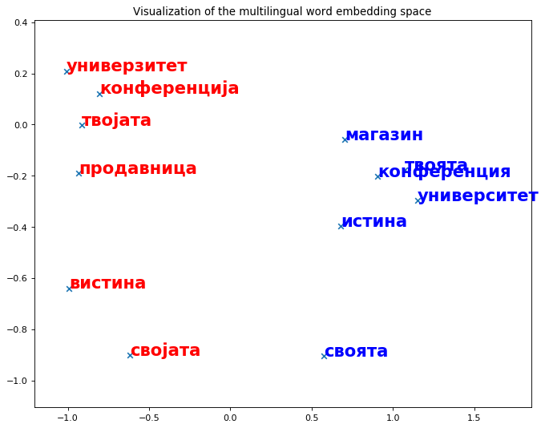
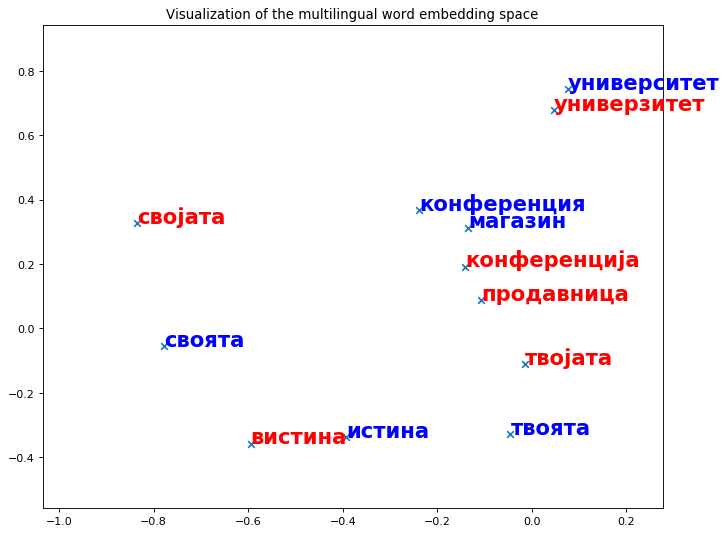
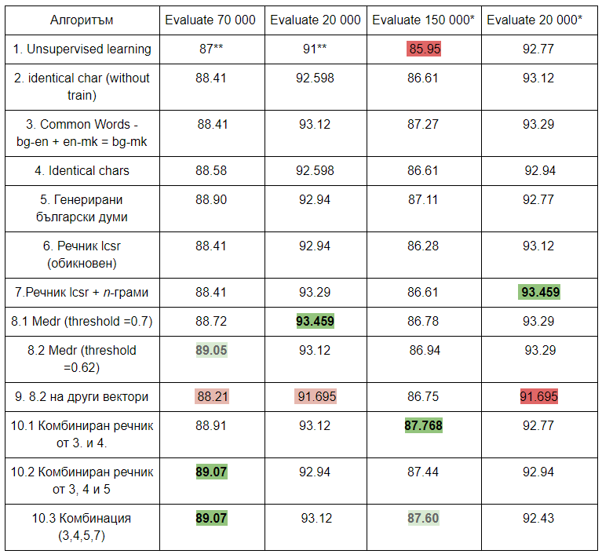

Векторни представяния чрез думи вграждания

Обработка на данните
Комбиниране на речник български-английски и английски-македонски
Генериране на речник от когнати
Генериране на български думи чрез заместване на n-грами
Намиране на най-дълга обща подредица
Намиране на най-дълга обща подредица с използване на n-грами
Разстояние на Левенщайн
Комбиниране
Архитектура и реализация на решението
Визуализация


Резултати

Обобщение
Бъдещи
насоки за развитие

Промяна на тестовото множество
Използване на други алгоритми
Прилагане на обучените модели
Обучение върху цялото векторно пространство
Използване на други данни
Благодаря за вниманието!
Въпроси?